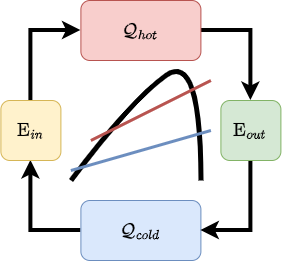

🔄
Cycle Systems
Model Organic Rankine Cycle and Heat Pump systems, with or without internal heat exchangers
Solve steady-state heat pump and organic Rankine cycle systems, with an optional cycle optimization framework

Documentation of Carnot.jl.
The goal of this package is to provide a non-linear solver for Heat Pump and Organic Rankine Cycle systems. It solves for pressures at the evaporator and the condensor for given pinch-point temperatures and provides a framework for plotting the solution. As of now the package is robust for subcritical cycle parameters. For thermodynamic properties, Clapeyron.jl is used as backend.
For details of modeling see: Carnot batteries for heat and power coupling: Energy, Exergy, Economic and Environmental (4E) analysis - Laterre, Antoine, which describes modeling for pure fluids. This package extends the method for mixtures.
The nonlinear solver chosen is Newton-Raphson with box bounds which is inspired by the implementation in NLboxsolve.jl.
This package only supports steady-state applications.
There are 4 systems provided: 2. Organic Rankine Cycle : ORC
Organic Rankine Cycle with internal heat exchanger : ORCEconomizer
Heat Pump : HeatPump
Heat Pump with internal heat exchanger : HeatPumpRecuperator
The implemented version of these systems consist of the following components: 2. Compressor : Modelling with isentropic efficiency
Expander : Modelling with isentropic efficiency
Valve : Modeled as isenthalpic process
Evaporator : Volumes of equal change in enthalpy.
Condenser : Volumes of equal change in enthalpy.
Heat Exchangers (no phase change) : using